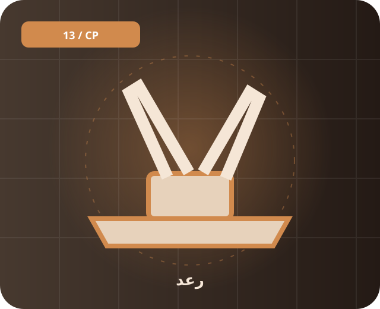

📚 پیشینه و معرفی
رعد نام خانوادهای از سامانههای پدافندی ایرانی است. نامگذاری نسخهها و مشخصات اعلامشده در گزارشهای مختلف متفاوت است، پس اعداد عملکردی باید با احتیاط بررسی شوند.
خانواده سامانههای پدافند هوایی که در نمایشهای رسمی ایران معرفی شدهاند.

رعد نام خانوادهای از سامانههای پدافندی ایرانی است. نامگذاری نسخهها و مشخصات اعلامشده در گزارشهای مختلف متفاوت است، پس اعداد عملکردی باید با احتیاط بررسی شوند.
سامانه پدافند هوایی در دسته پدافند قرار میگیرد. خانواده سامانههای پدافند هوایی که در نمایشهای رسمی ایران معرفی شدهاند.
برای شناخت دقیقتر، تاریخ انتشار منبع، نسخه دقیق تجهیز و تفاوت میان اعلام رسمی و ارزیابی مستقل را بررسی کن. یک نام گاهی به چند نسخه متفاوت اشاره دارد.
رعد، پدافند، دفاع هوایی